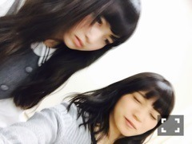
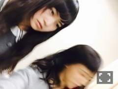
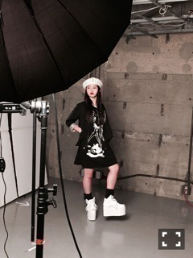
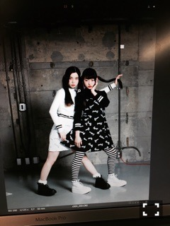
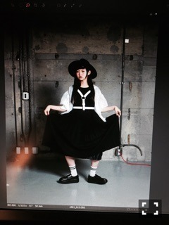
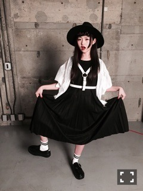

| 2015/03 15 Sun | 捨てて、取り入れて 。632回目 |

今週、アルバム特典の
クルージングがありました！
同じテーブルでお話するのは
緊張してしまった。
クイズ大会苦戦した！
楽しんでいただけたかな？
動画のまいまいと私



微動だにしない私。
あーおちゃめだなあ、まいまい
お姉さんみんなおちゃめ。
今月号のCUTiEは乃木坂づくし！
個人連載が
スタートすることになりました。
"万理華の脳内"
ファッション、アート
それ以外にも私の好きなものこと
気になるものことその他
いろんなことをここで
発信していこうと思います。
1ページを自分で制作します。
こそこそ準備をしていました！
楽しさと大変さを実感。
スタートする今月号はなんと
見開きでやらせていただいてます。
タイトルのフォントも、
お父さんと一緒に考えました。

背景も自作だよーゆるい
これは左ページ
読者様が毎号楽しみになるページを
目指して頑張ります。
何かやってほしいことや
見たいものなど
ぜひ、コメントください！
みなさんの意見も取り入れながら
自由なページをつくっていきたい。

これはモノトーン特集。
とても好きなページです！
密かに片思いしていた
モデルのるうこさんに来てもらい、
対談させていただきました。

写真の空気感がすごく好きでしたが
会っても素敵な空気感で。
入り込みたいって思った人なのです。
私の意味不明行為にも
笑顔で対応してくれたるうこさん。
ありがとうございました。
服の話もたくさんできた〜
また会いたい、、るうちゃん！

専属モデルになった飛鳥と共に、
私の連載も何卒、
何卒よろしくお願いします...
ファッション、アート面で
もっと頑張りたい。

発売中のEX大衆では
奈々未と対談してます。
意外な組み合わせ？
でもわりと似てる部分もあると
思うのはなんでかな
誕生日がいっしょって大きいのかな
というか誕生日いっしょだから
勝手にそう思っちゃうのかな
奈々未とこういう話がしたかった
っていう話ができたー
ほんとに実現してほしいー
まりか
コメント(581)
2015/03/15 00:00